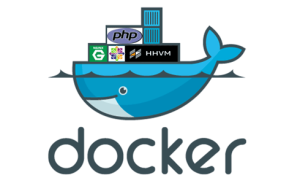

I find trying to replicate the SugarCRM environment locally a real pain. One of the main issues is simply that Sugar requires such old versions of PHP to be installed, especially compared to other web projects I have that implement the latest/greatest versions of PHP. Running multiple PHP versions simultaneously can be a pain. One solution is to use Vagrant but I find that too heavy for my needs, so I gave docker a go and found it a much faster/elegant solution.
Here's the steps to get yourself up and running.
You'll need your own installation of MySQL for this. As I use Debian testing as a host I just installed MySQL on it and have my SugarCRM boxes point to the host using the dockerhost entry in /etc/hosts on each docker container.
There is nothing at all stopping you from creating another Docker instance running MySQL but I figured this was an unnecessary step and getting data persistence working with Docker can be a little annoying.
Simply clone the repo for whichever version you intend to you use.
I have two versions of this setup for both SugarCRM Version 7.2(Needing PHP 5.3) and Version 7.5(Needing PHP 5.4).
Sugar-Docker 7.2 is here. Sugar-Docker 7.5 is here.
run.sh
Edit this script and change the containers ip to whatever your hosts ip is. Don't forget to set the folder to your SugarCRM code folder.
files/vhost.conf
Change settings here if you wish to use a custom url to access Sugar or if you have multiple instances of SugarCRM installed.
files/php.ini
Change any settings you might want to customise with PHP here.
In config.php I just set the mysql host to dockerhost.
Then on your host operating system make sure to point the virtualhost url to the box. For me, in my /etc/hosts I have this entry.
127.0.0.1 sugar.dev
Because I've used stdout for logs you can see apache errors by running a command like this.
sudo docker logs -f sugarcrm72